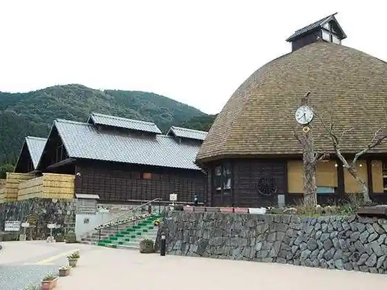
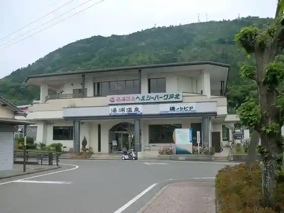
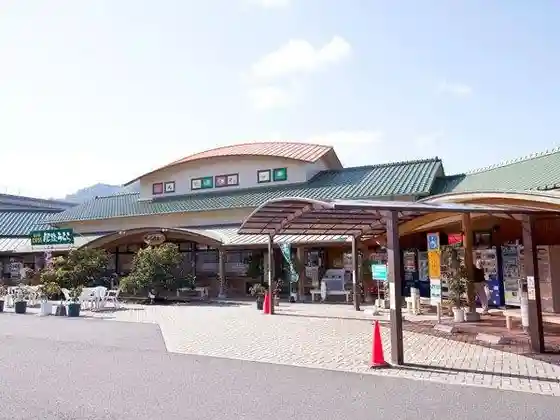

Ono Onsen Center
Ashikita, Kumamoto · 0966-61-7300 · Official / source link

Herushii Park Ashikita
Ashikita, Kumamoto · 0966-86-0259 · Official / source link

Kanko Utase Fune
Ashikita, Kumamoto · 0966-82-2066 · Official / source link
Roadside Station Ta no Ura Higo Urara
Ashikita, Kumamoto · 0966-87-2230 · Official / source link

Kamei So
Ashikita, Kumamoto · 0966-86-0063 · Official / source link
Da Ropu Tei
Ashikita, Kumamoto · 0966-86-1929 · Official / source link
O Shokuji Tokoro
Ashikita, Kumamoto · 0968-87-2230 · Official / source link
Ashikita Utase Chokubai Shokudo Ebi Iori
Ashikita, Kumamoto · 0966-83-8888 · Official / source link
Nosaka no Ura
Ashikita, Kumamoto · 0966-87-1171 · Official / source link
Kiyomasa Ko Iwa
Ashikita, Kumamoto · 0966-87-1171 · Official / source link
Tsurugahama Beach
Ashikita, Kumamoto · 0966-82-2511 · Official / source link
Yu no Kaori Hashi
Ashikita, Kumamoto · 0966-82-2511 · Official / source link
O Ritsu Misaki Campground Marinhausu
Ashikita, Kumamoto · 0966-87-0737 · Official / source link
O Ritsu Misaki Koen Beach
Ashikita, Kumamoto · 0966-87-0737 · Official / source link
Ashikita Marin Park Beach
Ashikita, Kumamoto · 0966-82-2511 · Official / source link
Sashiki Castle Ruins
Ashikita, Kumamoto · 0966-87-1171 · Official / source link
O Ritsu Misaki Park
Ashikita, Kumamoto · 0966-87-0737 · Official / source link
HOTEL AZ Kumamoto Ashikita Mise
Ashikita, Kumamoto · 0966-68-3301 · Official / source link
Ashikita Kaihin General Park
Ashikita, Kumamoto · 0966-82-5588 · Official / source link
Bisutoro Pazapa
Ashikita, Kumamoto · 0966-82-3399 · Official / source link
OONO-CAMP
Ashikita, Kumamoto · 090-7148-6841 · Official / source link
Roadside Station Ashikita Dekopon Famazumagatto Dekopon
Ashikita, Kumamoto · 0966-61-3020 · Official / source link
O Cha no Kajihara
Ashikita, Kumamoto · 0966-84-0608 · Official / source link
Ashikita Kaihin General Park Ugoi Te ! Hashaide ! Waratsu Te !
Ashikita, Kumamoto · 0966-82-5588 · Official / source link